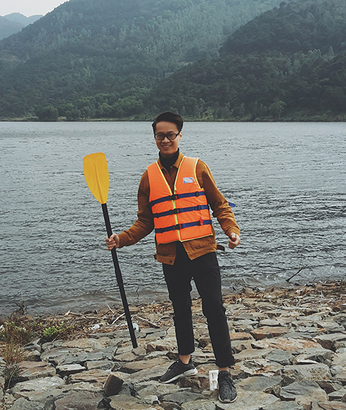

Nguyễn Minh Trung - Câu chuyện về bước ngoặt từ bỏ 13 năm học và làm ngành Điện để theo đuổi đam mê Lập Trình
Mình là Nguyễn Minh Trung. Đang ở độ tuổi 3x.Tốt nghiệp ngành Điện của Đại Học Bách Khoa Hà Nội. Mình đã có bằng thạc sĩ về quản lý công nghệ. Đã có 6 năm đi...
10/03/2018

Phạm Anh Tuấn với quyết định khó khăn ở tuổi 30 !
Hi Tuấn, được biết Tuấn vừa xin được việc. Tuấn đang lập trình ở công ty nào vậy? Hiện em mới bắt đầu làm tại công ty Co-well Asia từ ngày 02/01/2018 vị trí...
09/01/2018

Lưu Minh Sao Khuê - một bạn gái sống tại Hồ Chí Minh , đã quyết định ra Hà Nội để đến Techmaster thực tập
Mình tên là Khuê đến từ thành phố Hồ Chí Minh. Mình tốt nghiệp chuyên ngành quản trị kinh doanh và đã đi làm được 4 năm trước khi quyết định chuyển sang ngành...
05/01/2018

Lập trình viên nên biết cân bằng giữa công việc và cuộc sống - Phỏng vấn Nguyễn Thành Đạt
Cùng đọc bài phỏng vấn của TechMaster với bạn Nguyễn Thành Đạt, hiện đang là một lập trình viên iOS tại công ty phần mềm Atlassian; để nghe Đạt chia sẻ...
16/01/2016

Bạn Đinh Tiến Thắng, sinh viên khoa CNTT đại học Hà Nội
Chào mọi người mình tên là Đinh Tiến Thắng, mình sinh năm 95 , mình là sinh viên khoa công nghệ thông tin trường đại học Hà Nội, sở thích của mình là nghe nhạc...
04/01/2018

Những kinh nghiệm về du học và làm việc tại các công ty phần mềm ở Đức - Phỏng vấn bạn Hồng Thái
Cùng đọc bài phỏng vấn của TechMaster với bạn Nguyễn Hồng Thái, hiện đang là một lập trình viên iOS tại công ty phần mềm H&R Media ở Đức
23/12/2015